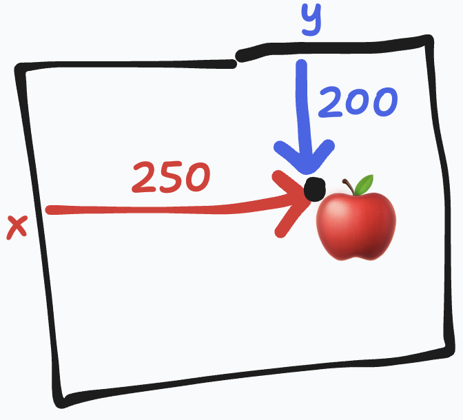
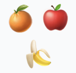

Layout
Have you ever wanted to programmatically place things on a computer screen? I'm not talking about using a robot to slap sticky notes on the glass, I'm talking about lighting pixels up in certain places on the screen to display a graphic.In many cases, the "basic" way to do that is to use a method that draws a graphic at certain coordinates on the screen.
draw(apple, 200, 200)

so yea, that's kinda what layout is for the purposes of this article. It's placing graphics at positions on the screen.
But layout gets more complex than rendering a single apple at a single spot. Layout is also about composing various graphics.
I want to show you an idea I have for how to do that.
Layout Combinators
You can combine a couple graphics that can be drawn at an x&y into a new combined graphic that can be drawn at an x&y!above(beside(orange, apple), banana)

Implementing Layout Combinators
One reason I like layout combinators is they don't take much code to implement. Less code is nice because that way I don't mind re-implementing them in different languages or in different rendering environments. Less code is also nice because it makes them easier to tweak!
circle = (r) => {
return {
w: r*2,
h: r*2,
draw: (ctx,x,y) => {
ctx.beginPath();
ctx.arc(x+r, y+r, r, 0, 2 * Math.PI);
ctx.stroke();
}
}
}
above = (a,b) => {
const w = Math.max(a.w,b.w)
return {
w,
h: a.h+b.h,
draw: (ctx,x,y) => {
const c = x+w/2
a.draw(ctx,c-a.w/2,y)
b.draw(ctx,c-b.w/2,y+a.h)
}
}
}
above(above(circle(10),circle(5)),circle(30))
.draw(circ_abov_c.getContext("2d"), 20, 20);
This is cool! We now have a composite graphic
above(above(circle(10),circle(5)),circle(30)) that we can draw
at an x&y (20, 20 in the code above, but you can change it and
press shift+enter to eval). But what if we wanted to set the position of the
middle circle
Propagators
Propagators are value containers (obs) that can depend on
eachother (via to). Feel free to skim the definition of
ob and to and check out the small demonstration
below that
ob = (v) => {
const listeners = [];
return {
on: (l) => listeners.push(l),
get: () => v,
set: (newV) => {
// if my value didn't change, stop propagating
if (Math.abs(v-newV) < 0.01) return;
v = newV;
listeners.forEach((l) => l(v));
},
};
};
to = (a, b, f) => {
// when the value of a changes, set the value of b=f(a.get())
a.on((v) => b.set(f(v)));
// optional: set b=f(a.get()) right away
b.set(f(a.get()));
};
syncObWithEl = (o, el, otherText='') => {
o.on((v) => (el.innerText = v + otherText));
el.innerText = o.get() + otherText;
}
a = ob(0)
syncObWithEl(a, valueOfA, ' (click for a+=1)');
valueOfA.addEventListener('click', () => a.set(a.get()+1))
b = ob() // make a and b depend on eachother so that to(a, b, (v) => v+2); // when a changes, b is a+2 to(b, a, (v) => v-2); // when b changes, a is b-2 syncObWithEl(b, valueOfB, ' (click for b-=1)'); valueOfB.addEventListener('click', () => b.set(b.get()-1))
c = ob() // make c depend on a and b so that when either change, c is set to a*b to(a, c, () => a.get()*b.get()); to(b, c, () => a.get()*b.get()); syncObWithEl(c, valueOfC);
Implementing Layout Combinators with Propagation
Now we have layout combinators and we have propagators. Let's put em together.
When we combinated graphics, we gave up the ability to draw the individual graphics at an x&y to gain the ability to draw the combined graphic at an x&y. What if we want to set the x&y of the combinated graphic by saying where one of the individual graphics inside of it should be though?
We can gain that expressive ability by using obs for the
positions of our graphics! Instead of positions being set in a top-down
fashion when we draw the combinated graphic, we will set up a bidirectional
dependence on the positions of parts of a combinated graphic and the whole.
Sorry, thats a bit hard to describe but the idea is intended to be simple!
The refactor consists of moving positions out of the arguments of the draw
method and into obs, and moving child positioning calculations
out of the draw method and into tos. Also I made it an
animation and am setting the position of the middle circle to try to
illustrate what is happening.
const circle = (r) => {
const x = ob(0);
const y = ob(0);
return {
x, y, w: r * 2, h: r * 2,
draw: (ctx) => {
ctx.beginPath();
ctx.arc(x.get() + r, y.get() + r, r, 0, 2 * Math.PI);
ctx.stroke();
},
};
};
const above = (a, b) => {
const w = Math.max(a.w, b.w);
const x = ob(0)
const y = ob(0)
to(x, a.x, v => v + w / 2 - a.w / 2)
to(a.x, x, v => v - w / 2 + a.w / 2)
to(x, b.x, v => v + w / 2 - b.w / 2)
to(b.x, x, v => v - w / 2 + b.w / 2)
to(y, a.y, v => v); to(a.y, y, v => v)
to(y, b.y, v => v + a.h); to(b.y, y, v => v - a.h)
return {
x, y, w, h: a.h + b.h,
draw: (ctx) => {
const c = x.get() + w / 2;
a.draw(ctx, c - a.w / 2, y.get());
b.draw(ctx, c - b.w / 2, y.get() + a.h);
},
};
};
let t = 0
function animation() {
requestAnimationFrame(animation)
const middleCircle = circle(15);
const entireGraphic = above(
above(
circle(Math.sin(t)*5+12),
middleCircle),
circle(Math.cos(t)*15+40)
);
middleCircle.x.set(100);
middleCircle.y.set(20);
const c = circ_abov2_c;
c.getContext("2d").clearRect(0,0,c.width,c.height);
entireGraphic.draw(c.getContext("2d"));
t+=0.02;
}
requestAnimationFrame(animation)
Now we are able to set the position of the middle circle directly (we couldn't do that before)! Neat!!!
Going Further
Bluefish
imo implementing layout combinators with propagation is the easiest/simplest way to implement a Bluefish-like. I made a prototype of that:alga (☠⚠️☣️WIP☣️⚠️☠).
The really cool thing about Bluefish is that you can relate the x and the y parts of graphics separately, and that makes a lot of layouts easier to express. Graphics often have their x related to different things than their y.
Its not hard to modify the code above to make it so
above only
relates the y parts of the graphics it combinates. Try removing those
tos that have to do with x, press shift+enter, and see what
happens!